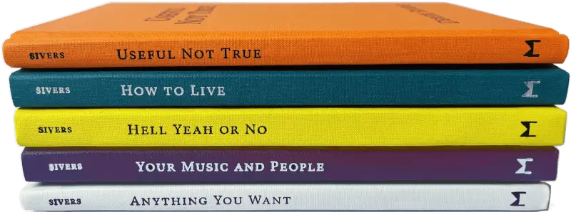
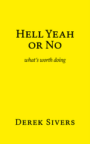
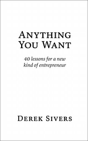

(Everything here is 100% me, no AI.)
me in 10 seconds
Xenophile, programmer, netizen, and conversationalist.
(1984-1997): Musician. Berklee grad, played 1000+ shows, guitarist for Ryuichi Sakamoto, wrote and recorded 120+ songs.
(1998-2008): Entrepreneur. Started and sold CD Baby. Paid $83M to musicians.
(2009-2025): Author, speaker. 5 books, 550+ articles, some TED talks, guest on 250+ podcasts.
(2026+): ?
Me in 10 minutes?
See my /about page.
What am I doing now?
See my /now page.
Contact me
I like meeting people, and I reply to every email, so say hello.
newest articles
- Bangalore India hospital flow
- Building without predicting
- Prepare your “no” and keep it handy
- My life was changed by four sentences in four books
- Geography is four-dimensional
… and more here.
my books

Useful Not True
Doubt everything. No beliefs are true. Adopt what works for you now.
How to Live
My masterpiece. Best thing I’ve ever made. My soul in a book.

Hell Yeah or No
Useful wisdom. Simple profound mental models to guide your decisions.
Your Music and People
Get your work to the world by being creative, considerate, resourceful, and connected.

Anything You Want
40 lessons for a new kind of entrepreneur. My tales of starting, building, and selling CD Baby.
See the foreign publishers of my translated books.
interviews
You can listen to over 250 interviews, where I’m the guest.
Each one has audio, sometimes video, and a full transcript.
projects
- Book Notes
- detailed notes from the last 430+ books I’ve read
- Now Now Now
- a collection of sites that have a “what I’m doing now” page
- Tech Independence
- step-by-step instructions to set up your own server and break dependency on the cloud
- Conversations in…
- when I travel, I meet with people who have emailed me
- Books that reference me
- excerpts from books that have written about me
- MusicThoughts
- inspiring quotes about music, translated into Español, Français, Deutsch, Italiano, Português, Русский, العربية, 日本語, and 中文
- Presentations
- my TED talks and other stage talks
tweets
- Bangalore India hospital flow: sive.rs/inflow
- Notes from Bangalore, India, where I spent most of two weeks in a hospital, and the rest with friends: sive.rs/met/at-15
- Building without predicting. (The story of how I built my perfect home.) sive.rs/fit
- I write to see what I can write. I code to see what I can code.
- 17 conversations in Jakarta, Indonesia: sive.rs/met/at-14
… and more here.
You want more?!
Everything I do is here on this site.
syndicated
I also syndicate to: